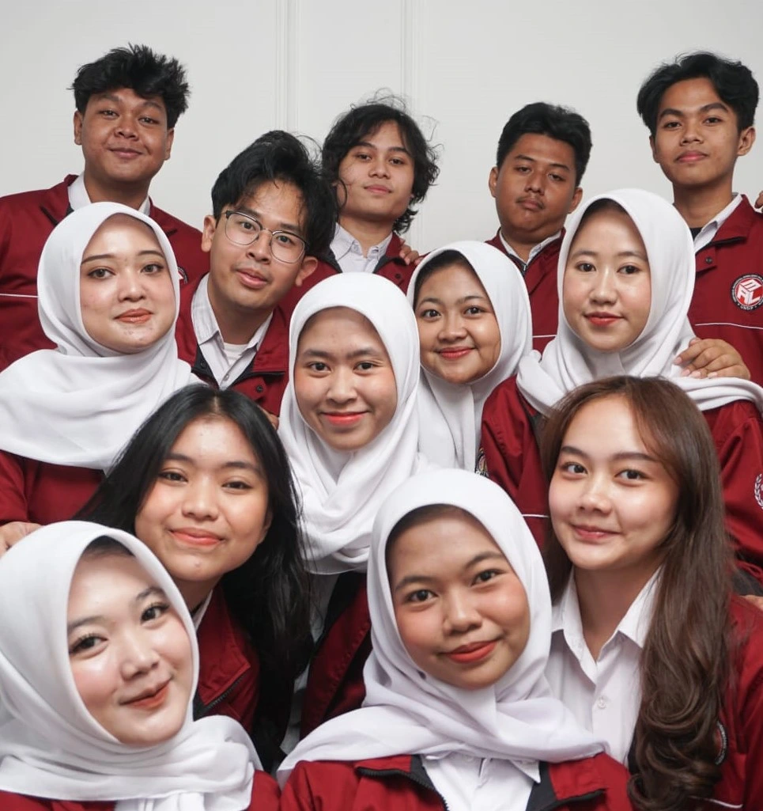

Status: Teragenda
Berdedikasi membangun jembatan komunikasi yang inklusif, memperluas jejaring, serta menebar dampak sosial yang berkelanjutan.

Merupakan bidang yang bertanggung jawab atas pengelolaan komunikasi dan citra program studi Manajemen dan Administrasi Logistik, baik secara internal maupun eksternal. Bidang HUMAS memiliki fungsi sebagai jembatan komunikasi antara program studi dengan berbagai pemangku kepentingan, serta berperan dalam mempromosikan kegiatan program studi Manajemen dan Administrasi Logistik.
Menjadikan Bidang Hubungan Masyarakat Himpunan Mahasiswa Manajemen dan Administrasi Logistik (HMMAL) sebagai wadah komunikasi yang kuat, terbuka, dan profesional dalam membangun hubungan yang harmonis antara mahasiswa dengan pihak internal maupun eksternal melalui pendekatan yang kreatif, strategis, dan berkelanjutan guna mendukung terwujudnya visi dan misi HMMAL.
Menciptakan dampak internal dan eksternal.
Bertujuan untuk menumbuhkan serta mengembangkan kepedulian mahasiswa Manajemen dan Administrasi Logistik agar menjawab isu-isu sosial yang terjadi dalam masyarakat sebagai bentuk implementasi dari salah satu Tridharma Perguruan Tinggi yaitu Pengabdian.
Bertanggung jawab dalam merencanakan kegiatan yang membangun, mendukung dan memperkuat hubungan antar organisasi baik di dalam maupun di luar kampus, kerjasama kemitraan dengan berbagai perusahaan serta sebagai wadah yang bermanfaat untuk pengembangan mahasiswa.
Klik kartu anggota untuk melihat biografi ringkas.
Rangkaian agenda Humas dalam satu periode kepengurusan.
Tertarik berkolaborasi atau mengajukan permohonan Media Partner?
Pelajari alur pengajuan dan unduh dokumen SOP resmi kami di bawah ini.
Unduh & pahami S&K publikasi media partner HMMAL.
Hubungi pihak Humas HMMAL untuk pengajuan kerja sama
Pihak Humas HMMAL akan memverifikasi persyaratan yang telah diajukan.
Hubungi Narahubung Media Partner Humas HMMAL